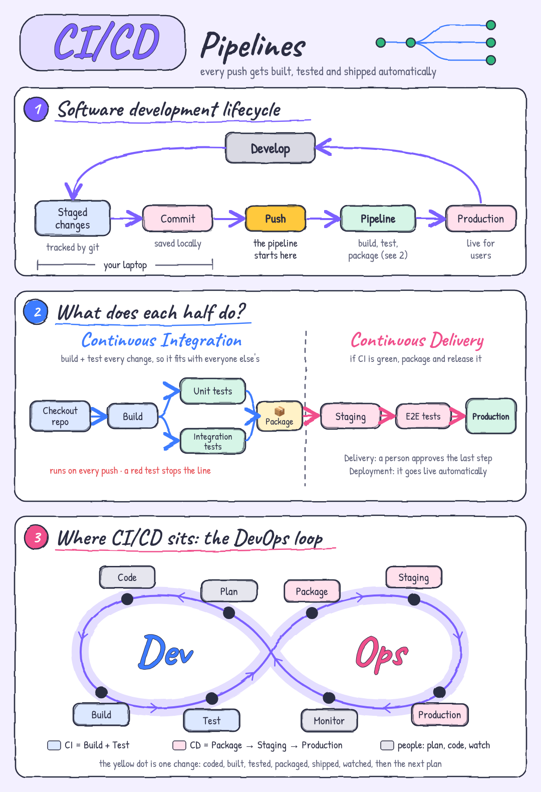

من مقال صعب،
لرسمة بتفهمها بـ 10 ثواني
From a hard article
to a graphic you get in 10 seconds
سكيل لـ Claude: بتعطيها موضوع أو رابط مقال، وبتعطيك رسمة شرح زي رسمات ByteByteGo، بأسهم بتتحرك، جاهزة لـ LinkedIn.
A Claude skill: give it a topic or a link, and get a ByteByteGo-style explainer with moving arrows, ready for LinkedIn.

بضغطة وحدة، فولدر فيه كل الصيغ
One request, every format in one folder
ما بتسألك شو بدك: بتطلّعلك كل إشي، وإنت بتختار وين تستعمله.
It does not ask which one you want: you get them all and pick where to use each.
ليش تثق فيها؟
Why you can trust it
انعملت بعقلية QA: الرسمة لازم تكون صح قبل ما تكون حلوة.
Built with a QA mindset: a graphic has to be right before it is pretty.
دقيقة
Accurate
كل معلومة من المصدر، والمصدر مكتوب على الرسمة. ما في رقم بدون مصدر، وإذا ما قدرت تقرا المقال بتطلب النص بدل ما تخمّن.
Every fact comes from the source, named on the graphic. No number without a source, and if it cannot read the page it asks for the text instead of guessing.
ألوانك، ومعناها واضح
Your colours, clear meaning
بتختار ألوانك واسمك مرة وحدة. والأحمر دايماً فشل، والأخضر نجاح، ومعهم ✓ و✕ لكل الناس.
Pick your colours and name once. Red always means fail and green means pass, each with ✓ or ✕ so everyone can read it.
مفحوصة قبل التسليم
Checked before delivery
13 فحص على الرسمة الحقيقية: نص طالع برّا، أو فوق نص، أو صندوق مكرر، أو حركة ناقصة. إذا في غلط، بتصلّحه قبل ما توصلك.
13 checks on the rendered graphic: text outside or on top of text, a box drawn twice, a step that never animates. It fixes failures before you see them.
التنزيل بـ 3 خطوات
Install in 3 steps
بتحتاج Claude Code (أو أي أداة بتدعم SKILL.md زي Cursor).
You need Claude Code (or any tool that reads SKILL.md, such as Cursor).
-
نزّل الزيب
Download the zip
من الزر فوق.
With the button above.
-
فكّه بفولدر السكيلز
Unzip it into your skills folder
لازم يصير عندك فولدر
designing-infographicsجوّا:You should end up with a
designing-infographicsfolder inside:WindowsC:\Users\<you>\.claude\skills\Mac/Linux~/.claude/skills/ -
افتح شات جديد واطلب رسمتك
Open a new chat and ask
موضوع، أو رابط مقال:
A topic, or a link to an article:
/designing-infographics How does Playwright know when to click?
للصور والفيديو بتحتاج Node.js، وهدول الأمرين. بدونهم بتاخد صفحة HTML المتحركة، والسكيل بتحكيلك شو ناقص بالزبط.
For images and video you need Node.js and these two commands. Without them you still get the animated HTML, and the skill tells you exactly what is missing.
npx playwright install chromiumwinget install Gyan.FFmpegجرّبها على أول مقال صعب بتقراه اليوم
Try it on the next hard article you read
مجانية ومفتوحة المصدر.
Free and open source.
نزّل السكيلDownload the skill